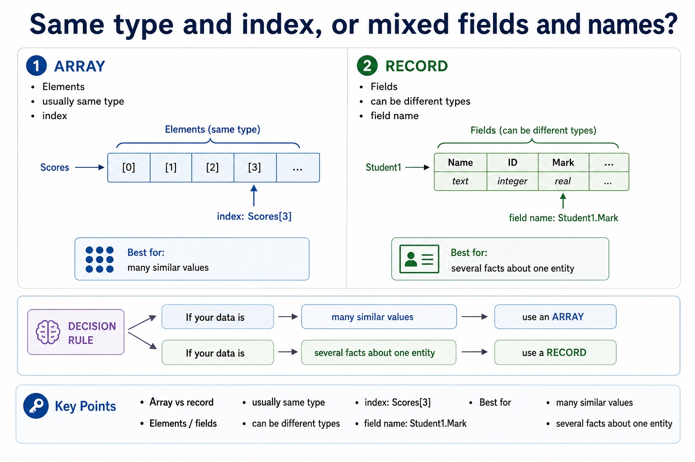
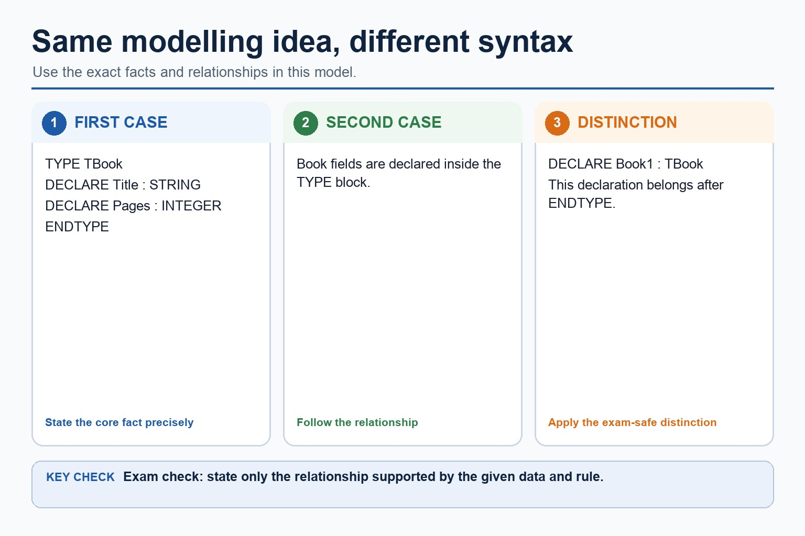
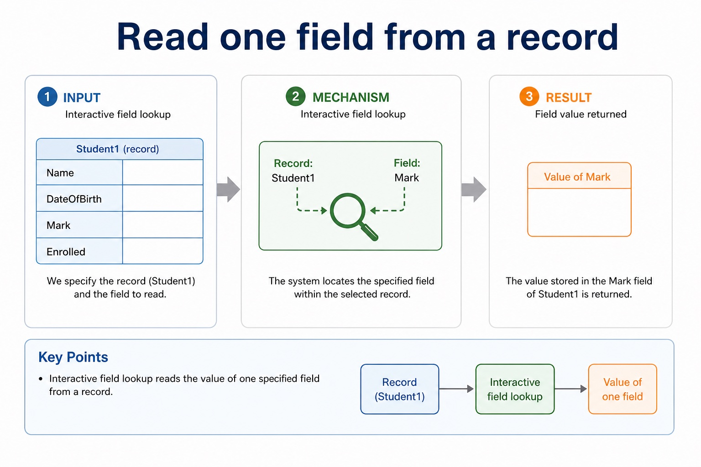

Linear search examines array elements in index order until the target is found or all populated elements have been checked. A complete algorithm initialises its index and found state, keeps every access within the declared bounds, compares the current element and advances only when another element remains to be checked.
Bubble sort makes repeated passes through the unsorted part of an array. Each pass compares adjacent elements and swaps them when they are in the wrong order. After a complete ascending pass, the largest remaining value is at the high end; the algorithm repeats until the required passes are complete or a whole pass makes no swaps.
A trace is evidence about one execution, but the syllabus requires candidates to write the algorithms. The answer must therefore include initialisation, loop bounds, comparison, update or swap, and a valid stopping condition rather than only showing one example pass.
Candidates must be able to write a bubble sort and a linear search algorithm, not only describe or trace an existing algorithm.
Worked example: Two complete array algorithms
A linear search of Code[1:Count] sets Found to FALSE and Index to 1, then compares Code[Index] with Target while Found is FALSE and Index is within Count. A bubble sort of Value[1:Count] uses nested passes, compares Value[Index] with Value[Index + 1], swaps an inverted pair through Temp and may stop early when a pass makes no swaps.
Core syllabus practice
Write linear-search and bubble-sort algorithms: apply and assess
Targeted practice
1. When must a linear search stop?
Show answer
When the target has been found or every populated element within the declared bounds has been checked.
2. What comparison is made by an ascending bubble sort?
Show answer
Compare adjacent elements and swap when the left element is greater than the right element.
3. What does a no-swap pass prove?
Show answer
No adjacent pair is out of ascending order, so the array is sorted and the algorithm may stop.
Exam-style question
8 marks
Write Cambridge pseudocode for a linear search of Name[1:20] and an ascending bubble sort of Score[1:20].
Show MS
Answer
Guidance
Marks
linear search initialises Found and Index
Do not award only a trace or a description; both requested algorithms must be written and must not access Index + 1 beyond the upper bound.
1
linear search loops within indexes 1 to 20 until found or exhausted
1
linear search compares Name[Index] with the target and records a match
1
bubble sort uses repeated passes
1
compares adjacent Score[Index] and Score[Index + 1] within valid bounds
1
uses Temp or an equivalent safe three-step swap
1
reduces the unsorted range or uses a valid no-swap stopping condition
1
all constructs close coherently in Cambridge pseudocode
A record keeps related facts together without pretending they are the same type.
Arrays are excellent when many values share one type and are accessed by index. A record is different:
it groups related fields that may have different data types. A student record can store a name, date of
birth, exam mark and enrolment status in one composite value.
Definerecord, field and composite data using accurate vocabulary
Declarerecord types and variables in Cambridge-style pseudocode
Use the field name, not a numeric index: source-grounded visual explanation.
Lesson fact: Access and update
Lesson fact: Pseudocode
Lesson fact: Read field
Lesson fact: OUTPUT Student1.Name
Lesson fact: outputs the Name field
Lesson fact: Update field
Lesson fact: Student1.Mark <- 80
Lesson fact: changes only the Mark field
Lesson fact: Test field
Lesson fact: IF Student1.Enrolled = TRUE THEN
Lesson fact: uses Boolean field in selection
Array vs record
Same type and index, or mixed fields and names?
Feature
Array
Record
Elements / fields
usually same type
can be different types
Access
index: Scores[3]
field name: Student1.Mark
Best for
many similar values
several facts about one entity
Same type and index, or mixed fields and names?

Same type and index, or mixed fields and names?: source-grounded visual explanation.
Lesson fact: Array vs record
Lesson fact: Elements / fields
Lesson fact: usually same type
Lesson fact: can be different types
Lesson fact: index: Scores[3]
Lesson fact: field name: Student1.Mark
Lesson fact: Best for
Lesson fact: many similar values
Lesson fact: several facts about one entity
Trace
Trace the field that changes
Statement
Name
Mark
Enrolled
Student1.Name <- "Ali"
Ali
-
-
Student1.Mark <- 72
Ali
72
-
Student1.Enrolled <- TRUE
Ali
72
TRUE
Pseudocode vs Java
Same modelling idea, different syntax
Cambridge-style pseudocode
TYPE TBook
DECLARE Title : STRING
DECLARE Pages : INTEGER
DECLARE Available : BOOLEAN
ENDTYPE
DECLARE Book1 : TBook
Book1.Available <- TRUE
Java support only
class Book {
String title;
int pages;
boolean available;
}
Book book1 = new Book();
book1.available = true;
Paper 2 reminder: Java class syntax is support only. Cambridge pseudocode should use clear TYPE/ENDTYPE-style record notation when required.
Same modelling idea, different syntax

Same modelling idea, different syntax: source-grounded visual explanation.
Lesson fact: TYPE TBook
DECLARE Title : STRING
DECLARE Pages : INTEGER
ENDTYPE
Lesson fact: Book fields are declared inside the TYPE block.
Lesson fact: DECLARE Book1 : TBook
This declaration belongs after ENDTYPE.
Interactive field lookup
Read one field from a record
Student1 has Name, DateOfBirth, Mark and Enrolled fields.
Read one field from a record

Read one field from a record: source-grounded visual explanation.
Lesson fact: Interactive field lookup
Lesson fact: Student1 has Name, DateOfBirth, Mark and Enrolled fields.
Interactive type builder
Generate a record declaration
Choose a scenario to generate Cambridge-style pseudocode.
Worked examples
Record modelling patterns
Practice with instant checking
Ten quick record checks
Answer briefly, then use Show answer to compare with strict wording.
Mistake debugging
Fix common record errors
Exam-style questions
Original Cambridge-style record questions with expandable MS
These questions focus on record declaration, field types, dot notation, and array-vs-record reasoning.
Summary
Record checklist
Groupuse a record for several related fields about one entity.
Nameaccess a field by name using dot notation.
Typeeach field has its own suitable data type.
Homework
Clear consolidation tasks
Task 1: Define a recordCreate a record type called TMember with fields MemberID, Name, DateJoined and HasOverdueBook. Choose suitable types.Task 2: Field accessDeclare Member1 as TMember, assign values to all fields, then output Member1.Name and Member1.HasOverdueBook.Task 3: ExplainWrite a 4-mark explanation of why a record is more suitable than an array for one member's mixed-type details.